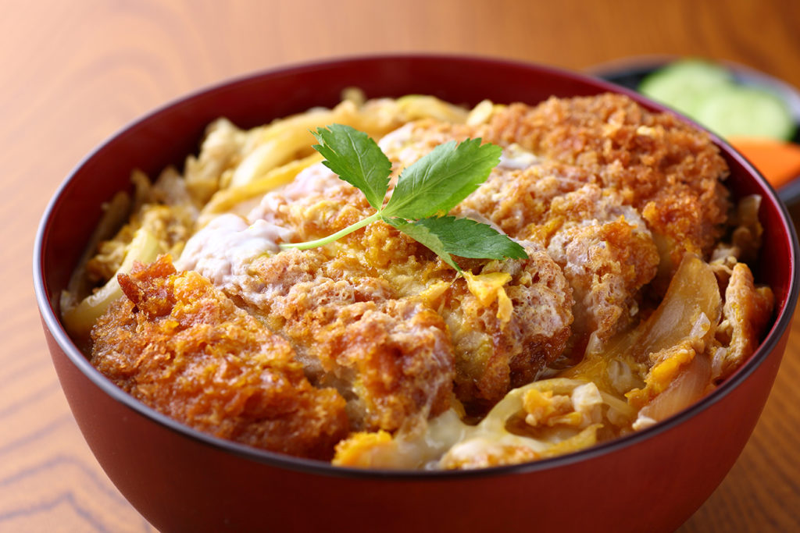

Katsu Don
Ingredients
- 2 center-cut boneless pork chops, pounded down to 1 centimeter thick
- Salt, to taste
- Freshly ground black pepper, to taste
- All-purpose flour, for dusting
- Eggs
- 1 cup of panko breadcrumbs
- Oil
- 1 1/4 cups dashi or chicken soup stock
- 1/3 cup soy sauce
- 2 tablespoons mirin
- 1 tablespoon sugar
- 1 medium onion, thinly sliced
- Steamed rice
How to Make this Katsu Don
- Season the pounded pork chops with salt and pepper.
- Dust with a light, even coating of flour.
- In one shallow bowl, beat 1 of the eggs. Put the panko into another shallow bowl.
- Add a thin, even layer of oil to a cast-iron pan or skillet over medium heat. The oil is ready when you drop some panko breadcrumbs into it and it sizzles.
- Dip the flour-dusted pork into the egg to coat both sides.
- Transfer the pork to the panko and press it evenly into the meat to get a good coating.
- Carefully lay the pork chops in the hot oil and cook for 5 to 6 minutes on one side, until golden brown.
- Flip and cook the other side for another 5 to 6 minutes, or until browned, crispy, and cooked through.
- Drain on a plate lined with a paper towel.
- Slice your tonkatsu into pieces.
- Put the dashi or chicken soup stock in a pan and heat on medium heat.
- Add the soy sauce, mirin, and sugar to the soup and bring to a boil. Remove from the heat.
- To cook 1 serving of katsudon, put 1/4 of the soup and 1/4 of the sliced onion in a small skillet. Simmer for a few minutes on medium heat.
- Add 1 serving of tonkatsu pieces (half of 1 pork cutlet) to the pan and simmer on low heat for a few minutes.
- Beat another one of the eggs in a bowl. Bring the soup to a boil and pour the egg over the tonkatsu and onion.
- Turn the heat down to low and cover with a lid. Cook until the egg has set and remove it from the heat. The egg should be cooked through.
- Serve by placing steamed rice in a large bowl. Top with the simmered tonkatsu on top of the rice.